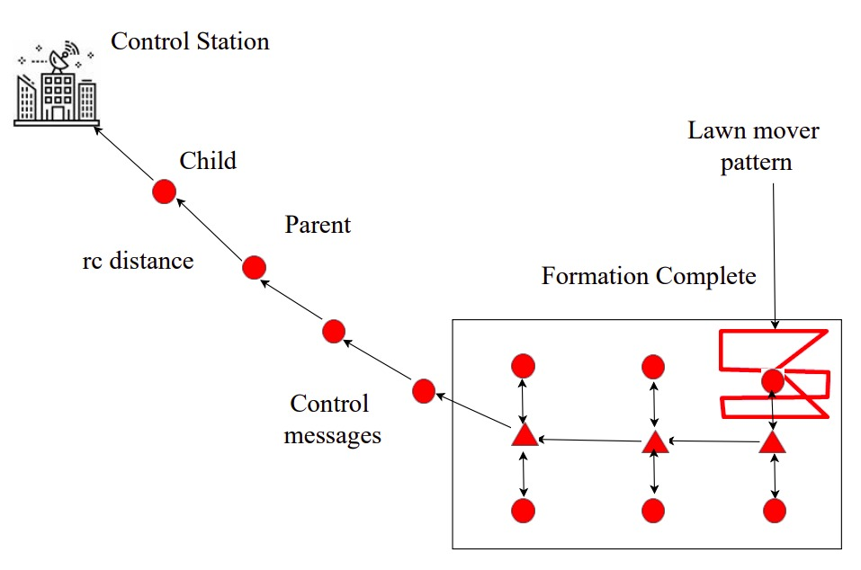

image / gif
MATLAB, EKF | Sept '25 – Dec '25
- Developed a nonlinear UAV-UGV localization system in MATLAB using an EKF and simulation-based validation.
- Evaluated estimator consistency using Monte Carlo testing with NEES/NIS analysis on simulated and real data.
image / gif
MATLAB, YALMIP, MOSEK | Sept '25 – Dec '25
- Built a convex optimization–based collision-free trajectory generation framework in MATLAB using YALMIP/MOSEK.
- Modeled cuboidal and cylindrical obstacles as convex sets using superellipse-based formulations for tractable optimization.
image / gif
ORB-SLAM3, SegFormer, C++, Python | Jan '25 – May '25
- Integrated ORB-SLAM3 pipeline with Nvidia SegFormer to detect and reject moving objects in crowded environments.
- Evaluated in real university environments, achieving 0.077 m ATE and 0.073 m / 1.33° RPE, showing robust localization.

Python, ROS, PyTorch, UR5 | Sept '24 – Dec '24
- Developed a self-supervised value network policy using spatial action maps for dynamic cloth unfolding on a dual UR5.
- Achieved 95% coverage on rectangular cloths and 87.68% on unseen garments (T-shirts) with zero-shot sim-to-real transfer.

ROS, C++, NS3, Gazebo, PX4 SITL | Aug '20 – Aug '22
- Developed a co-simulation platform integrating NS3 and Gazebo through ROS/C++ for testing multi-UAV swarm tasks.
- Implemented UAV swarm motion planning (C++) and analyzed network metrics like PDR, hop-by-hop and end-to-end delay.
- Simulated a wildfire rescue UAV swarm (PX4 SITL and ROS) for surveillance application. Published in ACM LANC '22.
image / gif
ROS, C++, Nvidia Jetson | Aug '19 – Apr '21
- Designed path planning and tracking (PID, Stanley, Pure Pursuit) controllers for the manipulation and locomotion systems.
- Developed ROS/C++-based drivers and software interfaces to integrate sensors and motor drivers with Nvidia Jetson.